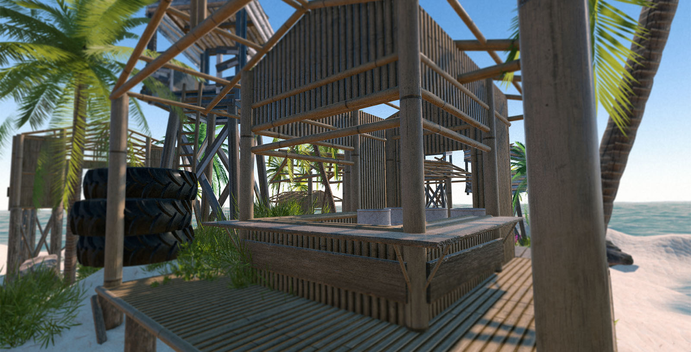
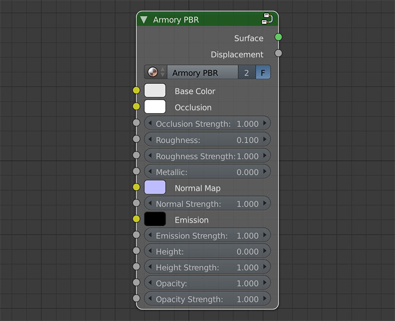
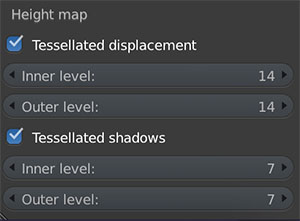
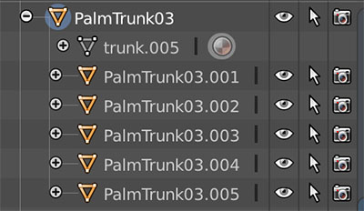
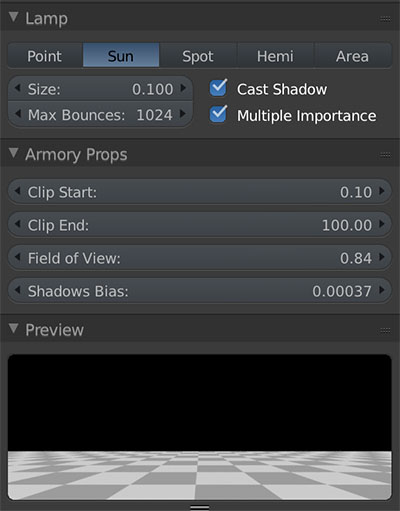
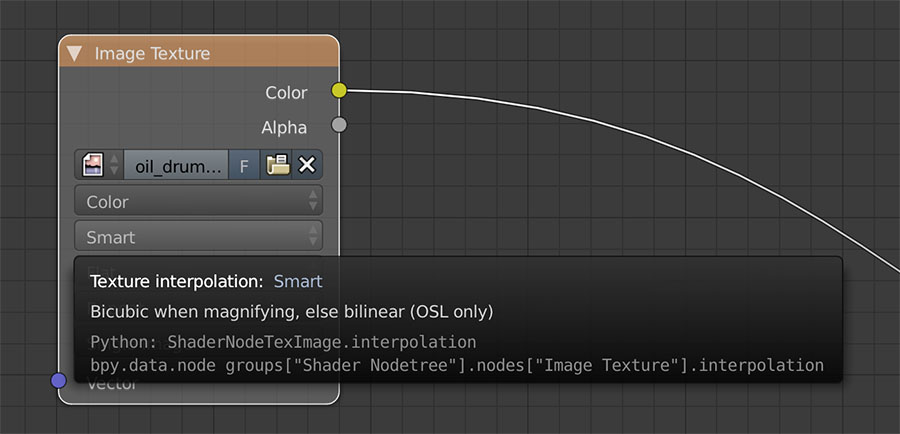

Achieve best graphics
This page talks about ways to improve graphics quality of Armory rendered scenes. Note that this may also considerably hurt performance as a result.
We will take the scene below and go through it's creation steps. Not the prettiest one but it may potentially resemble work on game environment, so we will take it.

1. PBR Assets
We need assets! Ideally the ones with PBR maps. We connect those to Armory PBR node group. For occlusion, roughness, metallic and height, single channel textures can be used to save memory.

Connecting Height socket will enable tessellated displacement. To configure amount of tessellation, locate Height map in Armory Props panel.

2. Scene design
We need lot's of objects to build lush scenery. To render the same object over and over again with varied location, instanced rendering is used. This gives a significant performance boost.
Select desired object and enable Object data - Armory Props - Instanced Children.

Create linked duplicates and parent them under original object.

3. Rendering
For higher precission shadows, we increase Shadow Map resolution in render path nodes. On top of that, tweaking Clip Start, Clip End and FoV in Armory Props to better resemble light volume can boost the precission further.

For higher quality shadows, enable Percentage Closer Soft Shadows flag in World Data - Armory Props. Lamp size also has to be increased.

For anisotropic texture filtering, set Texture interpolation to Smart. To enable this for all textures at once, check Force Anisotropic Filtering in World Data - Armory Props - Flags.

For better diffuse light shading, enable Oren Nayar Diffuse in World Data - Armory Props - Flags.
4. Effects
...
Enable Film Grain in World Data - Armory Props.
Set depth of field distance and aperture size in Camera Data - Depth of Field.

...
5. Anti-aliasing
Enable best possible AA method.
6. Global illumination
...
Set up global illumination.
...